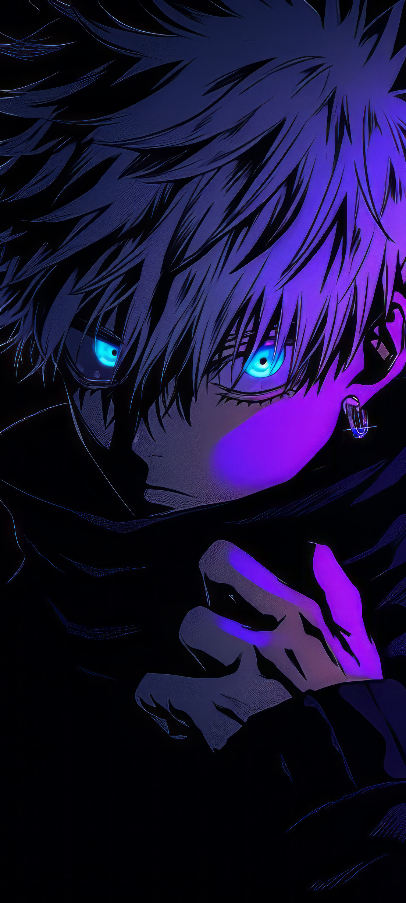
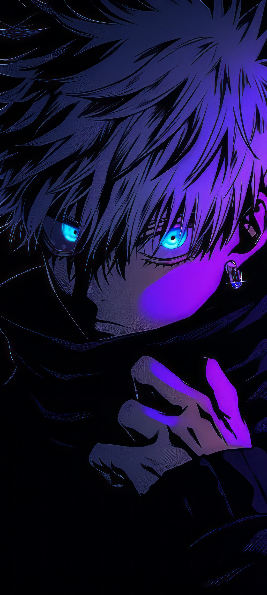

Sobre o Satoru Gojo
Satoru Gojo é um personagem fictício da série de mangá e anime Jujutsu Kaisen, criado por Gege Akutami. Ele é conhecido como o feiticeiro mais forte da era moderna, graças ao seu imenso poder e habilidades sobrenaturais.
Gojo é facilmente reconhecido por seu cabelo branco e venda nos olhos, que esconde seu poder ilimitado. Ele é um professor da Tokyo Jujutsu High, onde treina jovens feiticeiros para combater maldições e proteger a humanidade.
Além de sua força impressionante, Gojo é conhecido por seu carisma e comportamento despreocupado. Ele frequentemente demonstra uma atitude brincalhona, mas não deve ser subestimado em batalha. Sua técnica amaldiçoada, "Infinity," o torna praticamente invulnerável, e ele possui habilidades que desafiam as leis da física.
Satoru Gojo é uma figura central em Jujutsu Kaisen, simbolizando o equilíbrio entre poder absoluto e a responsabilidade de usá-lo para o bem maior. Sua presença é um lembrete de que, mesmo em um mundo cheio de maldições e perigos, há aqueles que se erguem como faróis de esperança e proteção.